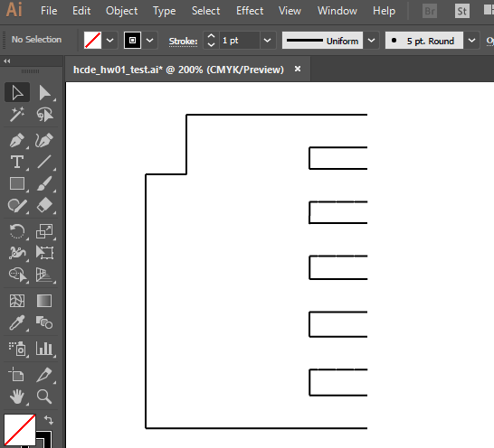

Leos Assignment 1: Laser Cut Cardboard Consturction Kit!

Here is all the documentation for assignment 1!
Building the test Jig
Planning an Approach
First thing I gotta do is make a "jig" with different slot thickneses. My calipers give me a thickness of 0.1580 in. Adobe Illustrator seems to stop at 0.01 inch increments. Okay, we'll make slots at 0.16, 0.17, 0.18 0.2.
Drawing the Jig
I was hoping I could draw a rectangle, add some points, and cut things out. Adobe Illustrator doesn't seem to let me do that (not without a fight, anyway), so I'll go line by line instead. Not has hard as I thought, once you start copy/pasting the repetitive lines.

Heh. Here's an idea. Imma put a notch at the top of my jig, so I know which end is which -- 0.016 will start at the notch

Now I gotta figure out how to make the camphers. Gonna need to shop off my "end lines" ....
Add some angled campheres (thank you copy/paste/flip-vertical)...

And reconnect the ends!

Okay, one more copy/paste so I have a pair, and it's off to the lasercutter!
Well, crap. Even my tightest slot is too loose. Need to figure out how to see sub-tenth line lenghts. Aha! clicking Shape gets you a form with exactl lenth and angle. Going to change up my slots to be 0.146 0.148 0.150 0.152 0.154.